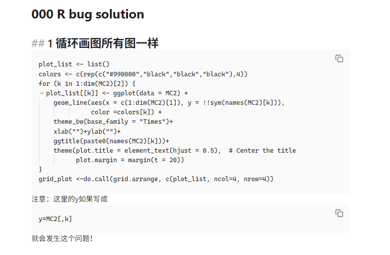

plot_list <- list()
colors <- c(rep(c("#990000","black","black","black"),4))
for (k in 1:dim(MC2)[2]) {
plot_list[[k]] <- ggplot(data = MC2) +
geom_line(aes(x = c(1:dim(MC2)[1]), y = !!sym(names(MC2)[k])),
color =colors[k]) +
theme_bw(base_family = "Times")+
xlab("")+ylab("")+
ggtitle(paste0(names(MC2)[k]))+
theme(plot.title = element_text(hjust = 0.5), # Center the title
plot.margin = margin(t = 20))
}
grid_plot <-do.call(grid.arrange, c(plot_list, ncol=4, nrow=4))
1 循环画图所有图一样
注意：这里的y如果写成
y=MC2[,k]就会发生这个问题！
2 ggplot作图不显示中文
theme_bw(base_family = "STKaiti")
或者
library(showtext)；showtext_auto()在主题里设置字体，具体可用字体可搜索
3 四舍五入保留两位小数，末尾为0也显示
sprintf("%.2f",round(Estimate, 2))Estimate换成具体数值
4 数据探索
summmary() #所有变量进行描述
pairs() #所有变量两两散点图5 多重线性回归教程
6 查看描述性分析的一个简单写法
ftable(xtabs(~var3+var1+var2,data = dat)) var1 代表行 var2代表列 var3分层
7 误差棒
dat<- read_excel('dat.xlsx') %>%
mutate(BMI = 体重/(身高*0.01)^2,
组别 = ifelse(组别==0,'实验组','对照组')) %>%
dplyr::select(c(1,29:34))
df <- dat[,c(1,6:7)]
df <- pivot_longer(df, cols = c(2:3), names_to = "condition", values_to = "value")
df$condition <- factor(df$condition)
df$组别 <- factor(df$组别)
data_summary <- function(data, varname, groupnames){
require(plyr)
summary_func <- function(x, col){
c(mean = mean(x[[col]], na.rm=TRUE),
sd = sd(x[[col]], na.rm=TRUE))
}
data_sum<-ddply(data, groupnames, .fun=summary_func,
varname)
#data_sum <- rename(data_sum, c("mean" = varname))
return(data_sum)
}
df2 <- data_summary(df, varname="value",
groupnames=c("组别", "condition"))
names(df2)[c(2,3)] <- c('阶段',"value")
df2$阶段 <- ifelse(df2$阶段=='抑郁','治疗前','治疗后')
ggplot(df2, aes(x=组别, y=value, fill=阶段)) +
geom_bar(stat="identity", color="black",
position=position_dodge()) +
geom_errorbar(aes(ymin=value-sd, ymax=value+sd), width=.2,
position=position_dodge(.9)) +
theme_minimal(base_family = "Times") +
theme(panel.grid = element_blank(),
panel.border = element_blank(),
panel.background = element_rect(fill = NA),
plot.background = element_rect(fill = NA,colour = NA),
plot.title = element_text(hjust = 0.5),
axis.text.y = element_text(face = "bold")) +
labs(x = NULL, y = '均值',title = "两组抑郁评分变化")+
scale_fill_manual(values=c('#999999','#CCCCCC'))8 长数据转化
library(tidyr)
# 创建一个宽格式数据框
wide_data <- data.frame(
id = 1:3,
var1_1 = c(1, 2, 3),
var1_2 = c(4, 5, 6),
var2_1 = c(7, 8, 9),
var2_2 = c(10, 11, 12)
)
# 使用pivot_longer函数将数据转换为长格式
long_data <- pivot_longer(wide_data, cols = starts_with("var"),
names_to = "variable", values_to = "value")
# 查看转换后的长格式数据
print(long_data)9 R代码加密
![[代码加密测试.zip]]
可参考： <(3 封私信 / 44 条消息) R语言用怎么实现，可以让别人用一个函数，但是不能看底码？ - 知乎>
<source code protection - Encrypting R script under MS-Windows - Stack Overflow>
10 ggplot 拼图技巧
library(patchwork)
(p1 + p2 + p3 + p4) +
plot_annotation(
tag_levels = 'A' # 设置标签为A, B, C, D
)11 quarto编译beamer中文不显示
title: 贝叶斯ppt
author: 何从源
date: now
date-modified: now
format: beamer
output:
beamer_presentation:
latex_engine: xelatex
mainfont: "Times New Roman"
CJKmainfont: "SimSun"
fontsize: 10pt 12 GitHub上下载R包本地安装
> library(devtools)
载入需要的程序包：usethis
> devtools::install_local("D:/Download/sl3-master.zip")